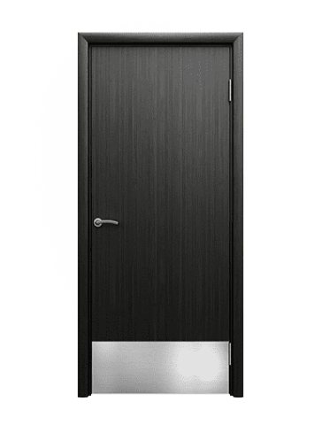
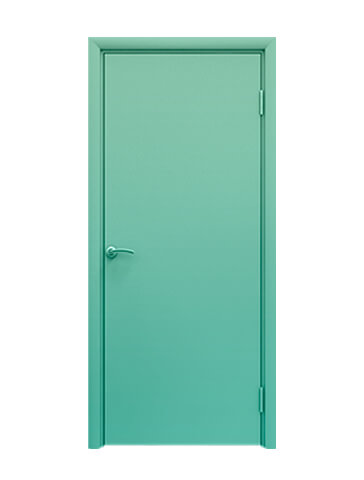
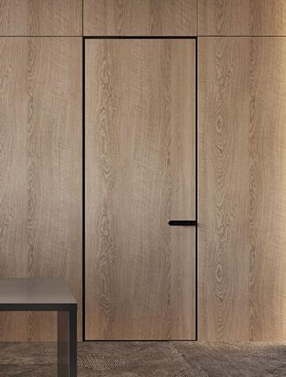

Типы выпускаемых дверей LASPAN
Офисные двери
- ПВХ-покрытие
- Более 300 декоров
- Фрезеровка под фурнитуру
- Телескопичекая коробка
Медицинские двери
- CPL/HPL-покрытие
- Более 50 декоров
- Фрезеровка под фурнитуру
- Металическая коробка
Скрытые двери
- Покрытие экошпон или ПВХ
- Более 70 декоров
- Подбор под стеновые панели собственного производства
А также
- Противопожарные с пределом огнестойкости EI 30 или EI 60
- Шумоизоляционные
- С передаточным окном
- С отбойными пластинами
- С системой «антипаника»
- С алюминиевой кромкой